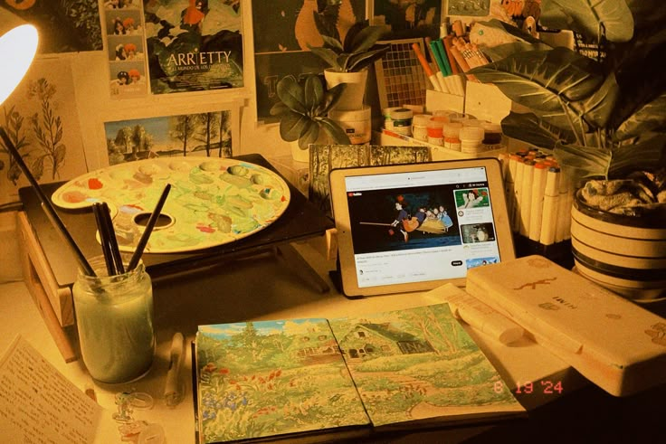

Họ và tên: Nguyễn Quỳnh Anh
Ngày tháng năm sinh: 20-4-2009
Quê quán: Thành phố Hạ Long, tỉnh Quảng Ninh
Lớp: 12A4
Trường: THPT Hòn Gai

Tôi là một người khá rụt rè và ít nói. Tuy nhiên, khi đã thân thiết với ai đó, tôi sẽ trở nên cởi mở và thoải mái hơn.
Nếu muốn biết thêm về sở thích và những dự định trong tương lai của tôi, hãy nhấn vào liên kết bên dưới nhé!